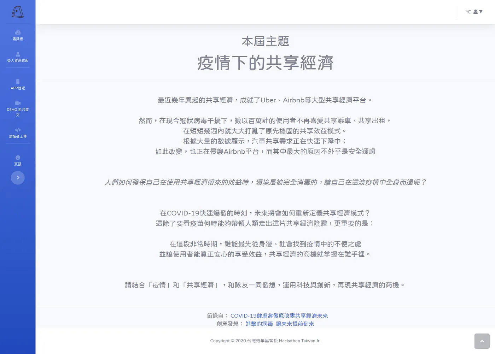

今年與朋友參加了名為青年黑客松的比賽，參賽對象是高中職為主，比賽在短時間內做出一個概念品（有點創意專案賽），而今年的競賽主題是「疫情下的共享經濟」。
前置作業
前置作業，好像也沒什麼前置作業，報名的時候我們決定要 Web 組，其餘就等待吧！
喔對了，因為今年疫情關係，賽事舉行方式和以往不同改為線上賽，以往是實體賽，可直接與隊友討論或尋求友組協助。
競賽過程
來說說比賽過程吧。 說實在的一收到競賽主題的時候，跟隊友悶了一段時間，因為真的拿這主題沒法子啊！

疫情下的共享經濟，來題解一下：重點放在中間段，「人們如何確保自己在使用共享經濟帶來的效益時，環境是被完全消毒的，讓自己在這波疫情中全身而退呢？」 共享經濟就是共享經濟（詞窮咩），共享經濟常見於 Airbnb、Uber 之類可能會與其他人間接接觸的事情，無論是實體服務或虛擬世界（主要還是現實服務），而在這波疫情爆發之際，這些共享經濟都很可能會因為安全衛生為由暫停服務，而請由參賽隊伍實作出一套解決方案。
喔天看到這裡隊友兩人整個茫了，考量到其他隊伍也可能使用題目中的舉例，但想舉例好像也只能舉題目中的範例（Airbnb、Uber），沒更好法子了，所以只好硬著頭皮選擇計程車。
計程車為構思
我們選擇「計程車」為本次共享經濟主角，構思想再搭乘計程車之餘，能讓司機自主或乘客回報該乘車潔淨消毒度，以確保乘客能安心乘車，不會因為消毒潔淨度而對自身安全感到憂心忡忡。
接著開始爬政府公開資訊的 API，找找看有沒有現成資料可以運用，大概爬了 2 小時宣告失敗，雖然有爬到幾個不錯的（Youbike 使用率），但我們需要的為更精確的使用資料，只好放棄使用現成政府公開資料這個管道。 我們轉換目標，前陣子我有注意到 55688 他們對資訊這塊地整合度很高，而資訊平台也有報導他們家有開發 API，於是就試著聯絡 55688，但很不幸的是假日資訊部放假 QQ，要等週一上工，不過比賽實做只到週日，所以我們只好先做好基底，有 API 可以串的時候就可以馬上串上去。
到後來雖然與 55688 客服確認過回電時間，不過就沒有下文了，於是就放棄串 55688 API 這個管道，將重心放在製作形象網站，反正初期比較要求至少形象網站能動，點了會引導到相對應畫面。 於是我們在倒數大概 10 幾個小時，狂衝隊友寫後端我寫前端， 整個血汗指數就上來了 ，最後在截止時間 週日 12:00:00 壓線上傳，雖然不算完整，前後端也還沒對接，但我們仍抱持信心繳交半成品。
公布 Demo
想當然我們沒被選上，而公布獲勝組 Demo 影片時，我們大吃一驚，原來其他組想到的可以比我們更多更有用，而我們侷限在計程車卻沒做出來：F。
今年比過一次，有了黑客松的經驗後，明年可以再調整方向，不要太專注在眉角，我們在乎的太細節要做出來，而 Web 獲勝組 Demo 做出概念網站有到位即可，這是我們需要調整的方向，明年再戰，嘎油！